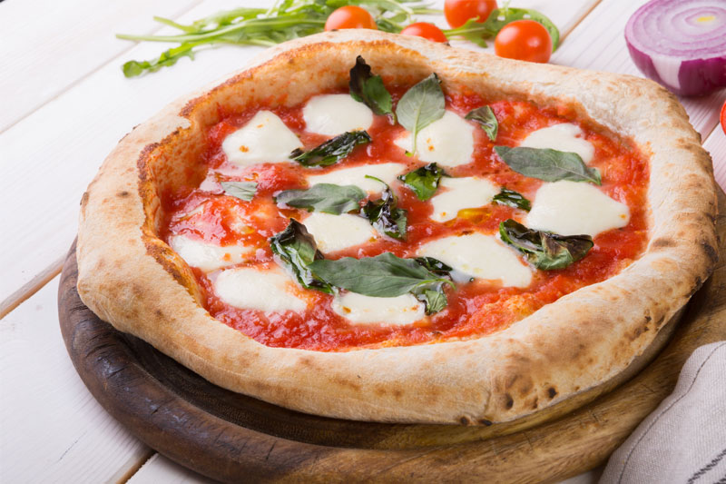
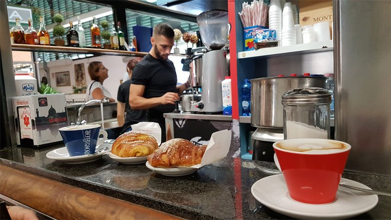
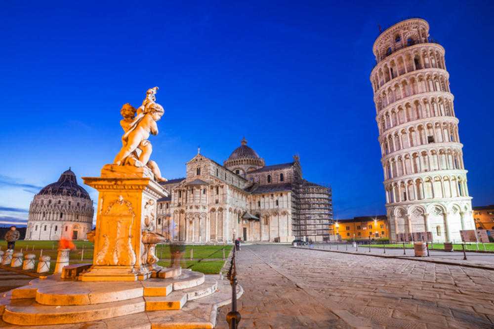

Mes niekada nevalgome picos kitose šalyse, nebent tai būtų geras itališkas restoranas. Jokių ananasų, jokio kečupo, jokio barbekiu padažo, jokios vištienos! Žodžiu, jokio kebabo ant picos! Neapolyje, kur gimė pica, yra taisyklės. Iš pradžių ant picos buvo dedami pomidorai ir ančiuviai, vėliau kažkas gamindamas picą karalienei Elžbietai, ant picos uždėjo mocarelos – kaip dovaną. Vis dėlto pirmosios, autentiškos, istorinės itališkos picos yra Neapolio pica (su ančiuviais), Margarita (su San Marzano pomidorais, mocarela, šviežiu baziliku, druska ir alyvuogių aliejumi), Prosciutto Cotto (su keptu kumpiu), Prosciutto Funghi (su kumpiu ir grybais) Quattro Stagioni (Keturių sezonų pica), Salame Piccante (su pikantišku saliamiu) ir Quattro Formaggi (Keturių sūrių pica). Ir tai viskas! Visos kitos tėra eksperimentai.

Limoncello yra populiaresnis pietų Italijoje ir paprastai ragaujamas po vakarienės restorane. Tačiau taip pat geriame amaro Montenegro (tradicinis italų žolelių likeris) ir amaro del Capo (bene mėgstamiausias italų likeris). Limoncello dieviname, ypač per vasaros atostogas, tačiau jis labiau turistams. Taip, tačiau ciao – labiau jaunatviško stiliaus žodis, suaugę paprastai taip nesako, nebent kalbėdami su vaikais. Tačiau man 35-eri ir aš vis dar visiems sakau ciao – tiek susitikus pirmą kartą, tiek atsisveikinant. Visada! Kepykloje, prekybos centre, parduotuvėje.

Net namuose italai nevalgo spagečių su šaukštu! Jei taip valgysite gerame restorane, visi į jus žiūrės kreivai. Nors šaukštas ir padeda žmonėms, kurie nevalgo spagečių taip dažnai, kaip italai (juokiasi). Mes bučiuojame vieni kitus visada! Turiu omenyje, draugus. Du, o kai kuriuose Italijos regionuose net tris kartus. Pietinėje Italijos dalyje, pradedant nuo Neapolio, italai kur kas šiltesni, taigi, jie bučiuojasi dar karščiau (juokiasi). Aš taip pat bučiuoju sutiktus draugus, aišku, jei žmogų sutinki 20-tą kartą per dieną, to daryti nebūtina. Čia, Bolcane (Bolzano), kur gyvenu, žmonės šaltesni, todėl jaučiu, kad kartais į mane žiūrima kaip į keistuolį (juokiasi).

Italija yra magija. Turistams mes tiesiog makaronus valgantys italai, tačiau jei čia gyveni, gali pajusti skirtumą tarp kiekvieno miestelio. Keliaujant Emilija–Romanija regione (Riminio ir Ravenos zona) gali pajusti kaip kas dešimt kilometrų pasikeičia pjadinos (duonos paplotėlių) receptas. Čia yra keturių rūšių konsistencijos duonos: Rimini, Riccione, Cesenatico ir Ravenna. Mes italai. Nieko neturi suprasti, nėra jokios logikos, tik meilė maistui. Tai tarsi menas. Mūsų Carbonara, mūsų Amatriciana, mūsų Cacio e Pepe ar Pasta alla norma nėra tiesiog makaronai. Tai magiškas dalykas, paslaptis, kurią atskleidžiame ne visiems. Ir paslaptis vis dar gyvena mažuose miesteliuose. Pasta all’Amatriciana yra istorinis patiekalas, kilęs iš Amatrice – nedidelio miestelio, esančio už 150 km nuo Romos. Prieš trejus metus jis buvo sugriautas žemės drebėjimo, tačiau nuo to laiko, nuo kiekvienos nupirktos pasta all’Amatriciana porcijos, restoranų šeimininkai aukoja po eurą miestelio atstatymui. Italai geri žmonės. Jie visada galvoja apie savo šeimą ir deda pastangas, kad ją išlaikytų. Yra maža paslaptis, kurią tau pasakysiu. Visada būsi šeimos dalis jei Italijoje turi draugą. Tai italų bruožas. Prisimink, jums tai tik makaronai, o mums tai gyvenimo būdas. Kiekvienas padažas dera su skirtingais makaronais! Ir nedėk daugiau kečupo ant makaronų, gerai? (juokiasi). Kalbant apie požiūrį į turistus, pietų italai atviri turizmui ir keliautoją laiko labiau savo dienos dalimi nei eiliniu klientu. Jie visada šypsosi, jie nemato tavo pinigų, jie žiūri į širdį. Žinoma, Italijoje yra ir blogų žmonių. Turistinėse vietose kaip Roma, Neapolis turistai labiau apmokestinami, taigi, yra ir tikrų plėšikų. Tačiau panašiai yra visuose didžiuosiuose pasaulio miestuose.